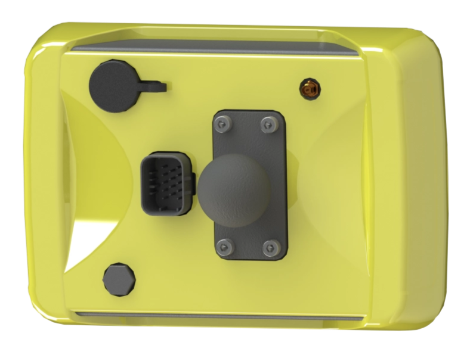

Le panneau et ses sept boutons
Ce qui se trouve à l'avant et à l'arrière du Hectare One, et ce que fait chacun des sept boutons.
Le Hectare One se commande avec sept boutons rétroéclairés sous l'écran et par des touchers sur l'écran lui-même. Tout peut se faire avec les seuls boutons — avec des gants, sur un champ accidenté.

- Écran. Écran couleur de 800 × 480 avec surface tactile. Ici : l'écran d'accueil.
- « HOME ». Passe d'un écran de travail à l'autre. Maintenu appuyé sur l'écran d'accueil, il verrouille et déverrouille l'application du produit.
- « MINUS ». Diminue la valeur sélectionnée.
- « UP ». Déplace la sélection vers l'élément précédent d'un menu.
- « MENU ». Ouvre le menu principal depuis l'écran d'accueil. Dans un menu, il entre dans l'élément sélectionné ; dans une fenêtre de dialogue, il valide.
- « DOWN ». Déplace la sélection vers l'élément suivant d'un menu.
- « PLUS ». Augmente la valeur sélectionnée.
- « BACK ». Quitte un menu ou un écran ; dans une fenêtre de dialogue, il annule. Sur l'écran d'accueil, il ouvre le menu du passage de jalonnage.
Ce que fait chaque bouton sur chaque écran figure dans Boutons et gestes.
L'arrière du panneau

L'arrière ne comporte aucune commande. Un connecteur de faisceau pouvant aller jusqu'à quatorze contacts amène tout au panneau. Les deux bouchons ronds en relief sont le connecteur de l'antenne GPS et le logement, protégé de la poussière, de la carte microSD ; la petite ouverture est l'équilibreur de pression du boîtier étanche. La rotule permet d'orienter et d'incliner librement le panneau sur une surface plane de la cabine. Pour une fixation sur un tube, un support supplémentaire est disponible.
Votre machine fait quelque chose que cette page n'explique pas ? Écrivez à support@agriwelt.com — un ingénieur vous répond.